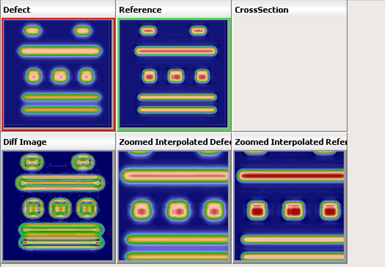

You can specify
a new color scheme to apply to colored images (when you select the
Colored option from the right-click menu of an image display) in
Calibre DefectReview. The Colored option applies the selected color
scheme to the Defect image, Reference image, and so on in the layout
based on the image type.
Procedure
- In the Calibre DefectReview
window, select Settings > Set Color
Scheme.
Figure 1. Set Color Scheme Dialog
Box
- Select a color from Color
scheme drop down list. The available color schemes are as follows:
Click Ok.
The selected color scheme is applied while displaying the colored
images. Figure 2 and shows an example image with the
NEW color scheme applied.
Figure 2. D2D Modality With
NEW Color Scheme
Note: For LDF inspection reports, only JET and HSV color schemes
are supported. NEW is not supported as it is a function of defect
and reference images that are not present in an LDF file. FILE-based
color schemes are only supported for LRF format. When you select
either NEW or FILE, then Calibre DefectReview defaults to JET and
issues a warning such as “Color scheme NEW or FILE not supported
for these images, defaulting to JET”.